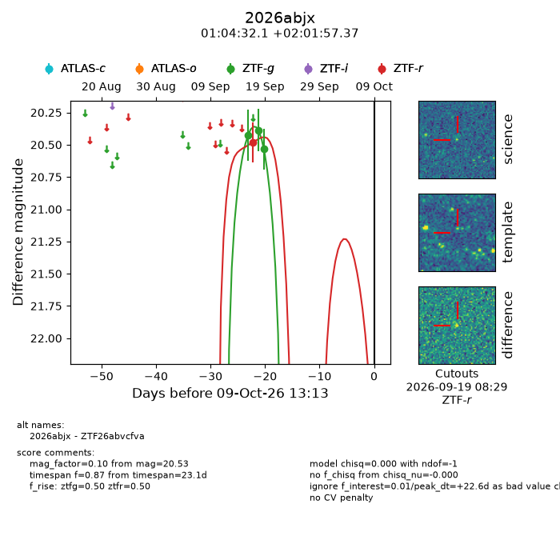
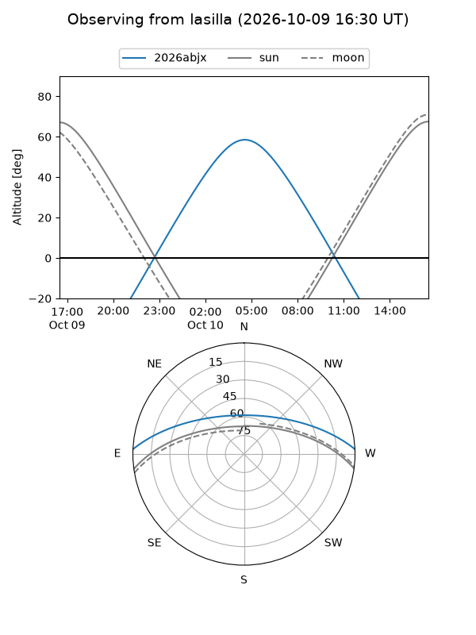
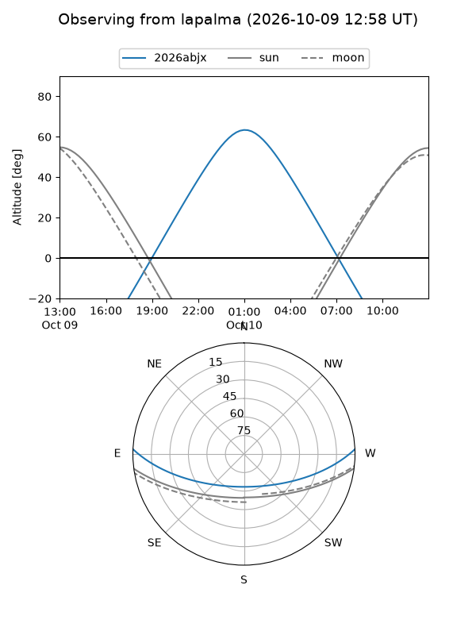
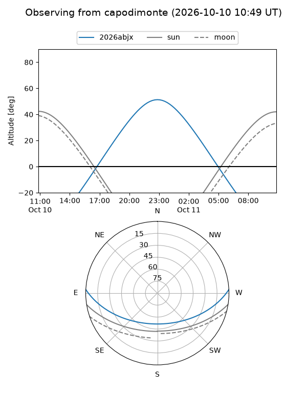
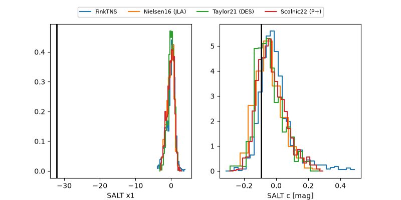

2026abjx
Target 2026abjx at 2026-10-09 13:15
Aliases and brokers:
FINK-ZTF: ztf.fink-portal.org/ZTF26abvcfva
Lasair-ZTF: lasair-ztf.lsst.ac.uk/objects/ZTF26abvcfva
ALeRCE-ZTF: alerce.online/object/ZTF26abvcfva
YSE-PZ: ziggy.ucolick.org/yse/transient_detail/2026abjx
TNS name: wis-tns.org/object/2026abjx
Direct TNS query: direct search
alt names
ZTF26abvcfva (ztf,fink_ztf)
2026abjx (tns,yse)
Coordinates:
equatorial (ra, dec) = 16.1336,+2.03260
equatorial (HMS+DMS) = 01:04:32.07,+02:01:57.37
galactic (l, b) = (129.6232,-60.66888)
Flags:
peak dt: +22.6
Photometry:
last ztfg=20.53, ztfr=20.48
3 ztfg, 1 ztfr detections
Lightcurve

Visibility



Additional plots
